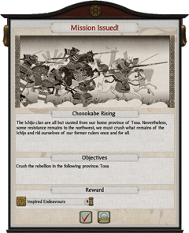

Missions
From time to time missions are issued, either by your clan, the Shogun or, if appropriate, your European trade partners. Mission objectives may be reviewed from the objectives list beneath the radar map or from the summary tab on the clan management panel. Although there is no penalty for failure, successful completion of a mission results in a reward, often in the form of bonus effects for your clan. If a mission becomes unachievable due to factors outside your control it will be cancelled automatically.